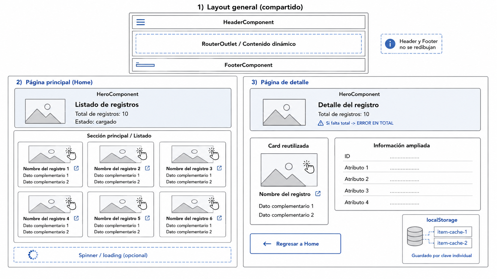

EVALUACIÓN TÉCNICA – Angular, Servicios, Señales, Navegación y Consumo de APIs
Asignatura: Programación y Plataformas Web
Carrera: Computación | Docente: Ing. Pablo Torres | Universidad Politécnica Salesiana
1. Introducción
Desarrollo de una aplicación funcional que consuma información desde una API externa, presente los datos mediante componentes visuales reutilizables y permita navegar hacia una página de detalle, aplicando buenas prácticas de organización, rendimiento, estructura semántica y experiencia de usuario.
2. Objetivos de la Evaluación
3. Indicaciones Generales
La aplicación deberá consumir información desde una API pública asignada durante la evaluación. La API proporcionará un listado de registros y un endpoint de consulta individual por identificador.
Se deberá crear una solución general, organizada y reutilizable, evitando depender de datos quemados para mostrar la información principal.
La aplicación debe contener como mínimo:
- Servicio Angular con métodos de listado y de detalle por identificador.
- Interfaces TypeScript para los datos del API.
- Página principal y página de detalle.
- Componentes:
HeaderComponent,FooterComponent,HeroComponenty componente card reutilizable. - Layout compartido; header y footer no se redibujan al navegar.
- Indicador de carga antes de mostrar los registros.
- Caché en
localStoragepor registro individual consultado.
4. Requerimientos Técnicos Globales
Prácticas obligatorias
- Uso obligatorio de servicios.
- Uso obligatorio de interfaces TypeScript.
- Señales para: total de elementos y estado de carga.
- Uso de directivas modernas.
- Estructura semántica HTML.
- Diseño responsivo.
- Código organizado por carpetas.
5. Estructura Mínima del Proyecto
La estructura puede variar según el criterio técnico de cada uno, pero debe mantener separación clara de responsabilidades y una arquitectura modular según la especificación.
Imagen Referencial – Layout General de la Aplicación

6. Header de la Aplicación
La aplicación deberá incluir un componente HeaderComponent.
Contenido mínimo
- Nombre de la asignatura.
- Nombre de la evaluación.
- Nombre completo.
- Carrera.
- Enlace al repositorio de GitHub (funcional).
- Componente (botón/div/p) que navegue hacia la página principal.
Requerimientos visuales mínimos
- Estilos con TailwindCSS y/o DaisyUI.
- Diferenciado visualmente del contenido principal.
- Buen contraste.
- Responsivo.
- Espaciado adecuado.
7. Hero de la Aplicación
La aplicación deberá incluir un componente tipo HeroComponent. El hero debe ubicarse
en un lugar estratégico de la estructura general para evitar repetirlo innecesariamente en cada página.
Contenido mínimo del Hero
- Título principal de la aplicación (título del listado del API).
Ej: Listado de personajes de los Simpsons - Total de elementos mostrados actualmente en la página principal.
Ej: Total de personajes: 16 - Estado visual relacionado con la carga de datos o la información disponible.
Comportamiento en la página principal / o home
El total debe calcularse a partir del arreglo cargado:
totalItems = items.length;
Comportamiento en la página de detalle
El hero muestra el valor recibido mediante parámetro de consulta en la URL.
URL válida
/detalle?id=6&total=10
Total de registros: 10
URL sin parámetro total
/detalle?id=6
ERROR EN TOTAL
Recibir parámetro
total = input.required<number>();
Requerimientos visuales mínimos
- Composición clara.
- Estilos de TailwindCSS y/o DaisyUI.
- Adaptable a pantallas pequeñas y grandes.
- Coherencia visual con el resto de la aplicación.
8. Servicio para Consumo de API
Deberá crear un servicio Angular encargado de consumir la API asignada. Debe contener al menos dos métodos:
Método – listado general
getItems()
Obtiene el listado general de registros.
Método – detalle por identificador
getItemById(id: number | string)
Obtiene un registro específico mediante su identificador.
Requerimientos del servicio
- Configurar URL base en variable de entorno.
- Centralizar la URL base o endpoints utilizados.
9. Interfaces TypeScript
Deberá crear interfaces para representar la estructura de los datos consumidos desde la API.
Interfaces mínimas requeridas
- Una interfaz para la respuesta del listado.
- Una interfaz para el registro individual.
- Interfaces adicionales si la respuesta contiene objetos internos o propiedades anidadas.
any para evitar el tipado de la respuesta.
10. Página Principal
La página principal deberá consumir el listado de registros desde el servicio creado.
Funcionalidades requeridas
- Obtener los registros desde la API.
- Mostrar estado de carga antes de renderizar las tarjetas.
- Actualizar mediante señal el total de elementos mostrados.
- Mostrar los registros en una grilla responsiva.
- Usar el componente card para cada registro.
- Manejar visualmente error o ausencia de datos.
Requerimientos de presentación
- Listado dentro de una sección semántica.
- Grilla adaptable a diferentes tamaños de pantalla.
- En pantallas amplias: varias tarjetas por fila.
- En pantallas pequeñas: tarjetas reorganizadas automáticamente.
11. Componente Card
El componente card deberá ser reutilizable y recibirá la información de un registro mediante
input.
Contenido mínimo del card
- Imagen del registro.
- Atributo principal del registro.
- Dos o más datos complementarios.
- Acción de navegación hacia el detalle.
Manera de recibir parámetros en el componente
item = input.required<Item>();
total = input.required<number>();
El item es el modelo interface del api.
Requerimientos funcionales
- El clic de navegación solo en la imagen y el atributo principal.
- No navegar al hacer clic sobre toda la tarjeta.
- Recibe datos desde la página principal.
- No consume directamente el servicio HTTP.
- Reutilizable también en la página de detalle.
Requerimientos visuales mínimos
- Fondo diferenciado.
- Bordes o sombra.
- Efecto hover.
- Espaciado interno adecuado.
- Imagen correctamente mostrada.
- Proporciones visuales correctas.
- Adaptable a distintos tamaños de pantalla.
- Clases de TailwindCSS y/o DaisyUI.
12. Navegación hacia Detalle
La navegación deberá enviar
- El identificador del registro seleccionado como parámetro de ruta.
- El total de registros mostrados actualmente como parámetro de consulta.
Ruta esperada
/details/6?total=10
6— identificador del registro seleccionado.total=10— total de registros mostrados actualmente en la página principal.
Código de navegación
router.navigate(['/details', 6], {
queryParams: { total: 10 }
});
Reemplazar los valores fijos por las variables correctas.
Requerimientos
- Ruta declarada correctamente en
app.routes.ts. - URL con formato
/details/:id?total=valor. - La página de detalle obtiene el
iddesde el parámetro de ruta. - La página de detalle obtiene el
totaldesde los query params. - El parámetro
totaldebe provenir de la navegación desde la página principal. - No se debe pasar todo el objeto por la URL.
13. Página de Detalle
La página de detalle deberá consumir el registro individual desde el servicio usando el identificador recibido por la URL.
Formato de ruta
/details/:id?total=valor
Ver comportamiento del Hero según el parámetro total en la Sección 7.
La página de detalle debe mostrar como mínimo
- Hero component.
- Card component (reutilizado).
- Botón o enlace para regresar a la página principal.
14. Caché Local con localStorage
Al ingresar a la página de detalle, el registro consultado deberá guardarse en
localStorage.
Cada registro debe almacenarse en una clave independiente.
Estructura de claves esperada
item-cache-1
item-cache-2
item-cache-3
Cada clave contiene la información del registro en formato JSON.
Servicio de caché requerido
ItemCacheService
Métodos mínimos del servicio
- Método para guardar un registro.
- Método
getByIdpara recuperarlo.
Restricciones de almacenamiento
- No se debe guardar todo el mapa de registros en una sola clave.
- Cada registro consultado debe tener su propia clave.
- El servicio debe manejar errores básicos de lectura o conversión JSON.
- El almacenamiento debe ejecutarse desde el servicio asociado, no desde el componente card ni page.
15. Loading y Retardo Simulado
La página principal deberá mostrar un indicador de carga antes de presentar los registros.
Requerimientos
- El loading debe mostrarse al iniciar la consulta.
- Retardo simulado mínimo de 2 segundos.
- Mientras se carga, no deben mostrarse tarjetas incompletas.
- Puede usarse un spinner de DaisyUI o implementación propia con TailwindCSS.
- Al finalizar la carga, deben mostrarse las tarjetas.
16. Estilos y Responsividad
La aplicación debe usar TailwindCSS y DaisyUI para mejorar la presentación visual.
17. Consideraciones de Rendimiento y Buenas Prácticas
18. Entregables
Deberá entregar en AVAC:
- Enlace al repositorio de GitHub.
- Commit final realizado dentro del tiempo establecido para la evaluación con capturas en README.
El README debe incluir:
19. Revisión del Proyecto
⚠ Importante
La evaluación se revisará únicamente desde el repositorio entregado en AVAC.El proyecto no debe presentar errores de instalación, compilación o ejecución.
Si el proyecto no puede clonarse, instalarse o ejecutarse, la calificación se verá afectada directamente.
20. Criterios de Evaluación
| Criterio | Pts | 0% – No logrado | 50% – Parcialmente logrado | 100% – Logrado completamente |
|---|---|---|---|---|
| 1. Estructura del proyecto, rutas y organización | 1 | Proyecto desordenado, sin rutas funcionales o con errores graves de estructura. | Estructura parcialmente organizada; rutas básicas funcionan, pero existen problemas de separación, nombres poco claros o carpetas mal distribuidas. | Proyecto organizado por páginas, servicios, interfaces y componentes; rutas limpias,
funcionales y correctamente declaradas en app.routes.ts. |
| 2. Servicio de consumo de API e interfaces | 1 | No consume API o usa datos quemados; no existen interfaces; uso excesivo de
any.
|
Consume parcialmente; interfaces incompletas; el servicio implementa solo parte de la lógica requerida o mezcla responsabilidades. | Servicio completo con método de listado y método de detalle; respuestas tipadas
correctamente con interfaces claras y sin uso innecesario de any. |
| 3. Página principal con listado, loading y señales | 1.5 | No muestra listado funcional; no hay loading ni señales. | Muestra datos parcialmente; loading incompleto; señal implementada de forma limitada o el total no corresponde al listado real. | Página principal funcional; loading con retardo mínimo de 2 segundos; señal actualiza el
total usando length del listado cargado; uso correcto de @if y
@for.
|
| 4. HeroComponent en página principal y detalle | 1.5 | No existe hero o solo aparece en una página sin lógica funcional. | El hero aparece en ambas páginas, pero muestra información incompleta o no valida
correctamente el parámetro total. |
Hero correcto en home y detalle; en home presenta el total del listado cargado; en detalle
muestra el query param total; si no existe, muestra
ERROR EN TOTAL.
|
| 5. Componente card reutilizable | 1.5 | No existe componente card o está mezclado directamente en la página. | Card parcialmente reutilizable; muestra datos mínimos; navegación incorrecta o dependiente de toda la tarjeta. | Card reutilizable, recibe datos por input, muestra imagen y datos relevantes;
la navegación ocurre solo desde la imagen y el atributo principal. |
| 6. Navegación hacia detalle con ruta dinámica y query param | 1.5 | No existe navegación funcional hacia detalle o la ruta está mal definida. | Navega parcialmente, pero no envía correctamente el id o no envía el parámetro
total.
|
Navegación correcta con formato /details/:id?total=valor; obtiene el
id desde la ruta y el total desde query params.
|
| 7. Página de detalle y consumo por ID | 2 | No existe detalle funcional o no consume el registro individual desde el servicio. | Detalle parcial; muestra pocos datos, no maneja correctamente loading/error o falla al recargar la ruta. | Detalle completo; consume por ID desde el servicio; muestra imagen, nombre o atributo principal, identificador y al menos cuatro atributos adicionales. |
| 8. Caché local con localStorage | 2 | No guarda información en localStorage. |
Guarda información, pero en una sola clave global o con estructura incorrecta. | Guarda cada registro consultado en una clave independiente; usa un servicio de caché local y maneja lectura/escritura de forma adecuada. |
| 9. Estilos, responsividad y UI | 2 | Interfaz sin estilos claros; no usa TailwindCSS/DaisyUI; no es responsiva. | Estilos básicos; responsividad incompleta; componentes visualmente poco consistentes. | Interfaz clara, responsiva, con header, hero, cards estilizadas, hover, espaciado, contraste y uso adecuado de TailwindCSS/DaisyUI. |
| 10. Ejecución, repositorio y entrega | 1 | El proyecto no se puede clonar, instalar o ejecutar. | El proyecto ejecuta con ajustes manuales o presenta advertencias/errores menores. | El proyecto se clona, instala y ejecuta sin errores; README incluye instrucciones básicas de ejecución. |
| Total | 15 | Conversión a nota sobre 10: Nota = (Puntaje obtenido / 15) × 10 | ||
Docente / Técnico Docente: Ing. Pablo Torres
Firma: _______________________________